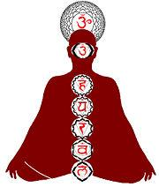

查克拉

1、印度哲學
印度哲學認為查克拉存在於身體中，同時掌管身心運作。在身體方面與各器官功能有關；在心理方面則對情感及精神方面都有影響。並且跟色彩有密切的關係，由下而上分別對應彩虹的七種色彩，並進而衍生出色彩療法。意即在生活中活用色彩能量對身體及心靈進行自然療法，給予身心安適感而回歸平衡的健康狀態。
2、七個查克拉比較表
下表列出最常被提及的七個查克拉：
| 符號 | 中文名稱 | 梵語名稱 | 位置 | 色彩 | 身體器官 | 心靈意義 |
|---|---|---|---|---|---|---|
 |
頂輪 | सहस्रार (Sahasrāra) | 頭頂 | 紫色 | 大腦、肌肉、皮膚、松果腺 | 精神性、視覺、統合、靈性 |
 |
眉間輪 | आज्ञा (Ājñā) | 眉心 | 靛色 | 小腦、眼、鼻、耳、腦下垂體 | 洞察力、創意、透視、直覺 |
 |
喉輪 | विशुद्ध (Viśuddha) | 喉部 | 藍色 | 喉嚨、氣管、食道、口腔、牙齒、甲狀腺 | 求生意志、本能、生命力、全體的基本 |
 |
心輪 | अनाहत (Anāhata) | 胸部 | 綠色 | 心臟、橫隔膜、肺、循環系統、胸腺 | 一般的情愛、允許、自我的存在、情感 |
 |
臍輪 | मणिपूर (Manipūra) | 腹部 | 黃色 | 胃、脾、肝、胰、神經系統 | 情感、社會性、自我、個性 |
 |
生殖輪 | स्वाधिष्ठान (Svādhisthāna) | 閭尾（脊柱末端） | 橙色 | 腸、腎、腰部、生殖器、內分泌系統 | 感覺、性徵、喜好、舊感情 |
 |
海底輪 | मूलाधार (Mūlādhāra) | 會陰 | 紅色 | 骨、足、脊髓、直腸、免疫系統 | 求生意志、本能、生命力、全體的基本 |